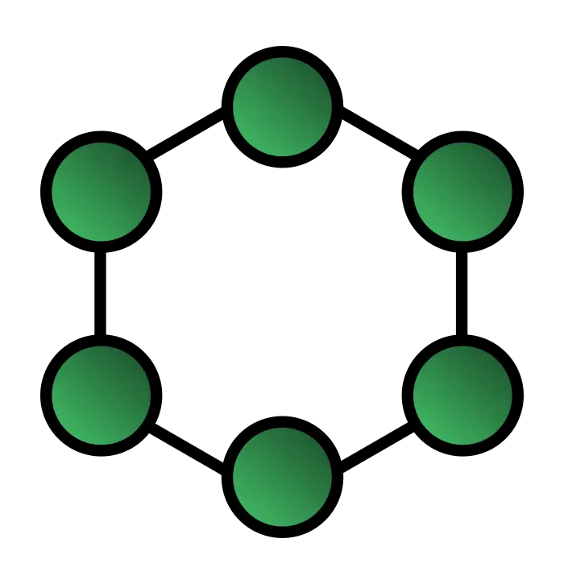

Topologi Bus
Topologi ini merupakan bentangan satu kabel yang kedua ujungnya ditutup, dimana sepanjang kabel terdapat node - node. Sinyal dalam kabel dengan
topologi ini dilewati searah sehingga memungkinkan sebuah tabrakan terjadi.
Topologi Tree
Topologi ini merupakan gabungan dari beberapa topologi star yang dihubungkan dengan topologi bus. Setiap topologi star akan terhubung dengan topologi
star lainnya dengan menggunakan topologi bus. Biasanya terdapat tingkatan jaringan pada topologi ini.
Topologi Star
Topologi star berbentuk seperti bintang. Topologi ini menggunakan hub / switch untuk menghubungkan setiap node yang ada.
Topologi Ring
Topologi ini terbentuk dari node - node yang ditata hingga membentuk suatu lingkaran. Karena tidak memerlukan ujung, maka topologi ini tidak memerlukan
terminator.

Topologi Mesh
Topologi ini ditata hingga semua node saling terhubung dengan komputer lain dalam jaringannya. Sehingga proses pengiriman data akan langsung
mencapai komputer tujuan tanpa memerlukan perantara.